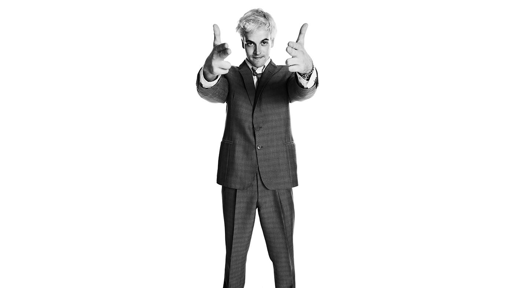

7.8.2026
Yusuf Tasyurt: "Cem Pulathaneli Hayatimi Kurtardi"

Yusuf Tasyurt: "Cem Pulathaneli Hayatimi Kurtardi"
Nova Roma mahlasiyla taninan unlu yazar ve ses sanatcisi Yusuf Tasyurt, medyaya olan sessizligini Allston Son Dakika ekibiyle yaptigi ozel raportaj ile bozdu. Sogutlucesme Marmaray Istasyonu'nda gerceklesen raportajda sanat, bilim, teknoloji ve post-modern-multi-cultural-performative-life-style uzerine ozenle hazirladigimiz 10 soruyu cevapladi.
Yusuf Tasyurt bu yaz hangi sehirlere gitti? Oralarda ne yapti?
Bu yaz benim icin cok sehirli gecti. Temel olarak ve sirayla Boston, New York, Istanbul ve Eskisehir'de bulundum diyebilirim. Istanbul'dayken bir uc dort gunlugune Bodrum'a, kadim dostum Arda Toker'i ziyarete gittim, ama onu saymiyorum. Bu sebeple dort sehir diyebiliriz, en azindan simdilik.
Yusuf Tasyurt Eskisehir'de ne yapiyor?
Eskisehir'de Turk savunma sanayisinin onemli sirketlerinden birinde muhendislik staji yapiyorum. Ilgilendigim bolum aero-thermal uzerine. Su an siki bir NDA altinda oldugum icin daha fazla detay veremiyorum. Hafta sonlari ailemle vakit gecirmek icin Istanbul'a donuyorum.
Yusuf Tasyurt Eskisehir'de vaktini nasil geciriyor?
Sabah ise gidiyorum, aksam eve donuyorum. Genelde spora gidiyorum. Sonra yemek yiyorum. Yemek yedikten sonra yorgunluk cokuyor. Genelde kiz arkadasimi aramaya calisiyorum. Son bir haftadir da aslinda spora gidemedim. Gecen gun, gece 3 sularinda amina kodumun su borusu patladi. Ilk basta bumm, akabinde de fissss diye bir ses geldi. Bir an ne oluyor dedim. Annem hep sogukkanli biri oldugumu soylerdi. Bu konu ozelinde pek de sogukkanli oldugum soylenemez. Buna ragmen panige suruklenmemeye ozen gosterdim ve sorunu cozdum. Benim yataktan cikmam ve sesin kaynagini tespit etmem yaklasik olarak bir 25 saniye aldi. Suyun yuksek tazyikle fiskirdigi noktayi tespit ettim ancak odanin ana su vanasinin nerede oldugunu bilmiyordum. O an aklimdan birkac senaryo gecti. Ilk olarak ana vana odanin disinda, koridorda olabilirdi. Veya odanin icinde, kisisel banyomda olabilirdi. Bunlardan biri kesin olmak zorunda diye dusundum. Kesin olsa bile bunlari tespit etmem ve kapatmam uzun surebilirdi. O sirada ayaklarimin altinda bir sogukluk fark ettim. Su birikmeye baslamisti. Ben ana vanayi bulana kadar su seviyesi cok fazla yukselebilir ve bogularak hayatimi kaybedebilirdim. Daha da kotusu, hirsli bir muteahhitin ise aldigi dikkatsiz bir elektrik ustasinin yaptigi hatali bir elektrik tesisatinin kurbani olup 240 Volt'u iliklerime kadar hissederek aci icinde son nefesimi verebilirdim.
Ertesi gun ise gitmesem mentorum beni merak edip arar miydi acaba? Arayacagini sanmiyorum. Zira bize, IK'ya stajyer istemedigini ve buna ayiracak zamani olmadigini acik bir dille soylemisti; buna ragmen IK'nin ona "zorla" stajyer verdigini de anlatmisti. Ertesi gun ofise gitmesem mutlu bile olabilirdi. "Bu beyaz tenli, sarisin cocuktan olmayacagi belliydi zaten. Yogun is temposuna ancak iki hafta dayanabildi," diyebilirdi. Kendisi cok mesgul ve bel agrilari var. Beli agridigi zaman bizle cok konusmuyor. Bazen sabah ofise girdikten sonra bana ilk kez bir sey soylemesi yarim saati buluyor. Ama beni merak etse ve bana ulasmak istese bile bana ulasabilir miydi ki? Kendisinde ne telefon numaram ne de e-mail adresim var. IK'ya sorar desen, IK'da da yalnizca ABD telefon numaram var. Bu senaryo korkutucu olmaya baslamisti. Dusunmeyi biraktim ve annemin sozunu hatirladim: "Benim oglum her zaman sogukkanlidir."
Once iceri gittim ve Camper'dan uc hafta once %50 indirimden aldigim parmak arasi terlikleri giydim. Daha sonra ozguvenli bir sekilde isiklari actim ve lavabonun altina egildim. Evet, orada vanaya benzeyen bir sey vardi. Ancak ne kadar kuvvet uygulasam da donmuyordu. Kafami kaldirdim ve son kez ana vanayi tespit etmeye calistim. Ana vana gozukmuyordu. Bu benim sonum olabilirdi.
Hayatim gozlerimin onunden bir film seridi gibi akmaya basladi. Ilk kez futbol oynadigim kum saha. Benim topum olmasina ragmen beni oynatmayan mahalledeki abiler. Karsi komsumuzun oglu Ahmet ile biriktirdigimiz paralarla aldigimiz torpil, torpilin ufak patlayici anlamina geldigi yillar. Robert Kolej yillarim ve Cem Pulathaneli ile FB'de, FB'nin Feyyaz Berker anlamina geldigi yillar, acil durum kapisi Ulus Kapisi Merdivenleri'ne acilan sinifta isledigimiz gunun son 80 dakikalik Fizik 1 dersi. Bitmek bilmeyen MasteringPhysics odevleri. Projectile motion, vf = vi + a*t, xf = xi + v*t + 1/2 * a * t^2.
Tork. O zamanlar moment yok ve hayat basit. T = F * x_dikey.
Evet buydu. Tork. Vanaya yeterince tork uygulamaliydim. Uygulayabilecegim maksimum kuvvet sabit oldugundan, torku artirmak icin kuvveti vananin donme ekseninden olabildigince uzakta uygulamaliydim. Yani vananin uclarina kuvvet uygulamaliydim. Ayrica bu kuvveti vana koluna dik, bir diger deyisle normal olacak sekilde uygulamaliydim. Kuvvetimin miktarini artiramazdim, ancak moment kolunu artirabilirdim. Cem Pulathaneli bunu bize ogretmisti. MasteringPhysics bunu bana defalarca sormustu. O zamanlar neden ayni soruyu farkli sayilarla tekrar tekrar cozdugumuzu anlamiyordum. Simdi anliyordum. Beni tam olarak bu ana hazirliyorlardi.
Kafami indirdim. Ayaklarim sirilsiklam, yerler islanmis, gecem mahvolmustu. Son gucumle vananin en uc noktalarina, vana koluna normal olacak sekilde kuvvet uyguladim. Vana once cok hafif bir sekilde hareket etti. Dogru yonde mi, yoksa yanlis yonde mi cevirdigimden emin degildim. Yanlis yonde ceviriyor olabilirdim. Vanayi daha fazla acip odanin icine giren su miktarini artiriyor da olabilirdim. Ancak bu ihtimali degerlendirmek icin yeterli zamanim yoktu. Ayni yonde kuvvet uygulamaya devam ettim. Vana yavasca dondu ve kapali pozisyona geldi. Su, durmustu.
Gozluklerim bugulu, yerler camurlu, uykum ise boluktu. Bu kotu bir geceydi. Ancak Cem Pulathaneli lisemin ikinci yilinda bana torku bu kadar iyi ogretmeseydi, cok daha kotu olabilirdi.
Sabah uyaniyorum, ise gidiyorum, eve geliyorum ve spora gidiyorum. Daha sonra eve gelip bir onceki gun yaptigim tavuklu, mantarli, kremali makarnayi yiyorum. Yemekten sonra agirlik cokuyor. Genelde kiz arkadasimi aramaya calisiyorum.
Hafta sonlari ailemle vakit gecirmek icin Istanbul'a donuyorum.